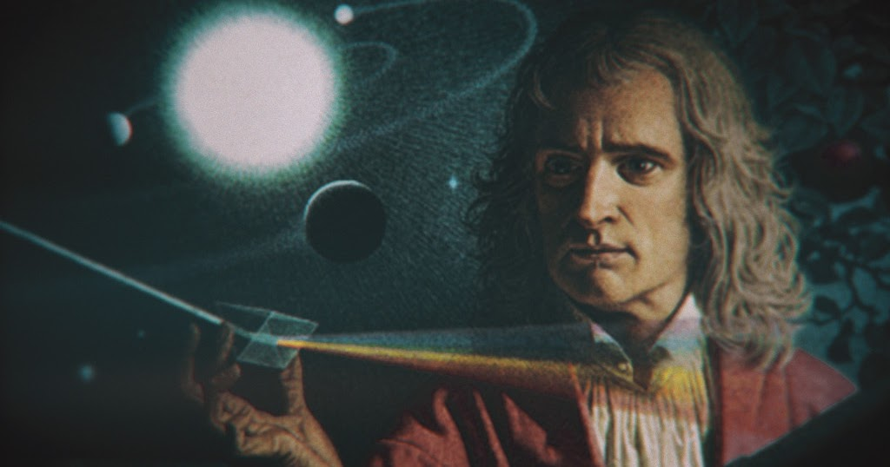

Quem foi Isaac Newton
Em 1727, poucas semanas antes de sua morte, um dos homens mais famosos da época está ocupado queimando caixas cheias de seus manuscritos. O que poderia haver escrito para que fosse necessário tal atitude? Isaac Newton foi o pai da ciência moderna. Ele descobriu o segredo da gravidade. Mas parece que maçãs caindo não estava no topo de suas prioridades.
Newton passou a vida estudando secretamente a arte milenar da alquimia e códigos da Bíblia E era capaz de ser absolutamente centrado em alguma coisa e obcecado. Ao mesmo tempo, era uma figura grandemente contraditória.
No ano de 1661 o jovem Isaac Newton, com 18 anos, deixa sua casa para cursar a Universidade de Cambridge, na Inglaterra. Em 1664, assisti a palestras do matemático Isaac Barrow e fica bem claro, que mesmo tão moço, é capaz de fazer pesquisas totalmente independentes e originais.
Em 1665 a epidemia de peste negra o força a mudar-se para norte, buscando proteção na casa de sua família. Nos dois anos que passa ali, ele inventa o cálculo, faz importantes descobertas em relação à luz e a fatídica maçã supostamente cai, fazendo-o desenvolver a teoria da gravidade.
De volta a Cambridge Newton descreve leis fundamentais que governam o universo. Porém manteve tudo em sigilo.
Era um ser muito reservado, com poucas relações sociais, convivia com baixa ou nenhuma empatia.
Isaac Barrow, seu professor, começa a divulgar alguns trabalhos realizados por Newton e aos poucos a comunidade científica começa a reconhecer o seu talento.
Dessa forma Newton ganha atenção da Royal Society, o mais importante grupo de desenvolvimento científico da época.
Isaac Newton passa a maior parte do tempo trancado em seu quarto. Fala com poucas pessoas e apenas sai desse isolamento quando seu professor resolve divulgar sua nova criação:
Newton havia criado um novo telescópio. Muito menor do que os que haviam na época. Além disso, sua criação resolveu um problema que era conhecido como aberração cromática (cores que se formavam em volta do objeto observado). Essa evolução foi possível graças a utilização de espelhos, no lugar de lentes.
Logo Newton divulgou seu estudo revolucionário sobre a luz e a natureza das cores. Por essas obras ele tornou-se reconhecido.
Uma outra figura eminente, o mais respeitado cientista, curador na Royal Socialty, Robert Hooke, escreve uma crítica contundente aos estudos de Newton. Essa crítica abala Newton profundamente que resolve se isolar novamente.
Nesse momento, Newton se concentra nessa prática ilegal na época, a alquimia. Isaac Newton se torna um alquimista. Lia obras e fazia experimentos ocultos.
Dez anos depois Edmund Halley visita Newton, em 1684, afim de debater as teorias de Kepler em relação ao movimento dos planetas. Newton, realiza um texto de onze páginas apenas, considerado a base da física moderna.
A partir disso, Isaac Newton escreve o livro Principia Mathematica, um livro surpreendente, escrito em latim. Considerado uma das maiores obras científicas já publicadas.
Estudos indicam que muitas descobertas científicas de Newton, são frutos de seus trabalhos com alquimia. Por essas questões Newton tomava muito cuidado com essa parte sigilosa de sua vida, as pessoas ainda consideravam alquimia um conhecimento fraudulento.
Nos últimos 20 anos de sua vida, Newton passa a estudar profundamente os escritos bíblicos, obcecado por códigos secretos e professais da Bíblia. Passa diariamente horas dissecando textos religiosos. Sobre as escrituras, ele escreve mais do que ciência e alquimia combinadas.
A verdade é que se suspeita que o material queimado antes de sua morte é referente a esses estudos ocultos de alquimia e teologia.
Newton serviu no parlamento, se tornou presidente da Royal Society e foi condecorado Sir.
Hoje se acredita que Isaac Newton sofria de síndrome de Asperger, que é uma condição apresentada em diversos gênios, como Einstein e Darwin. Essa síndrome determina uma mutação no funcionamento do cérebro, criando comportamentos diferentes das pessoas normais.
Quando Newton morreu, em 1727, era um dos homens mais famosos do mundo. Hoje é festejado com um dos homens mais influentes da história.